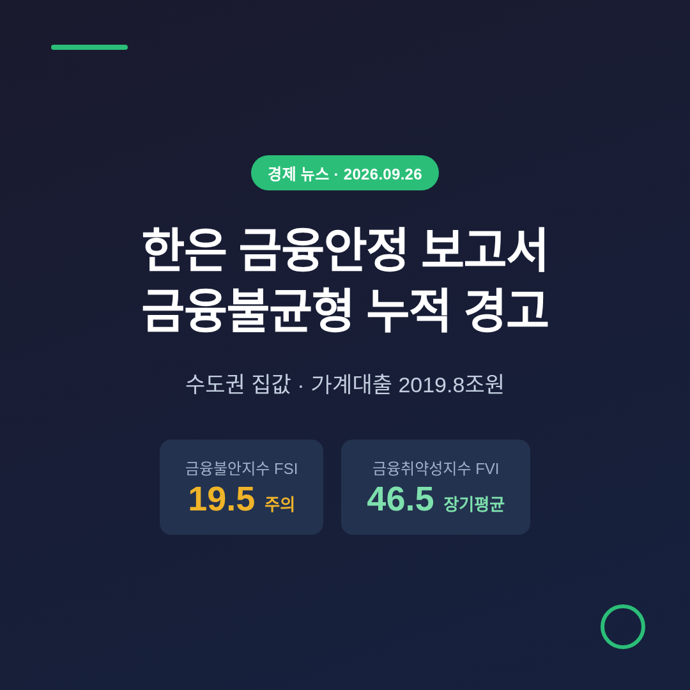
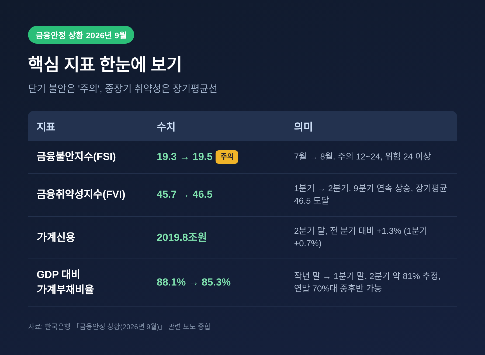
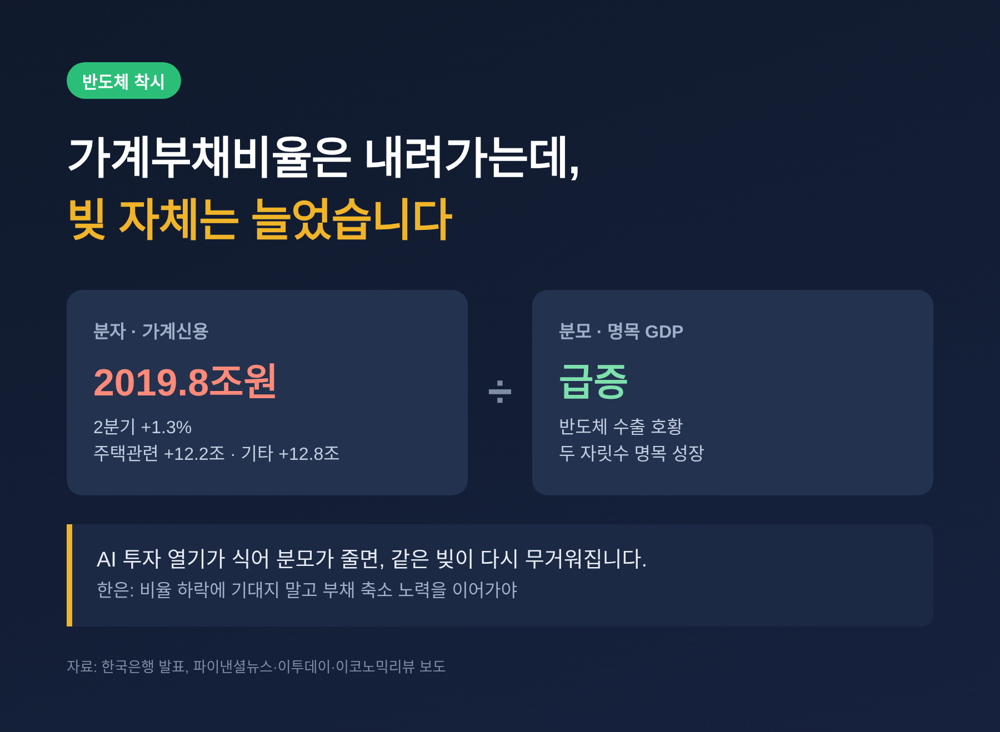
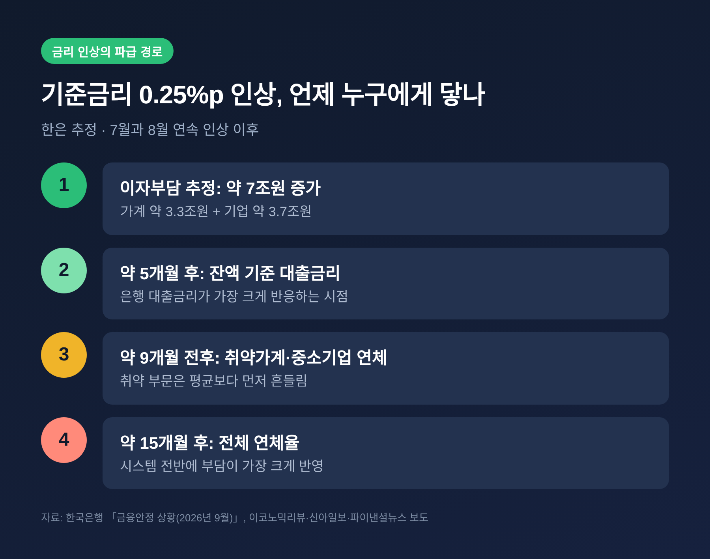
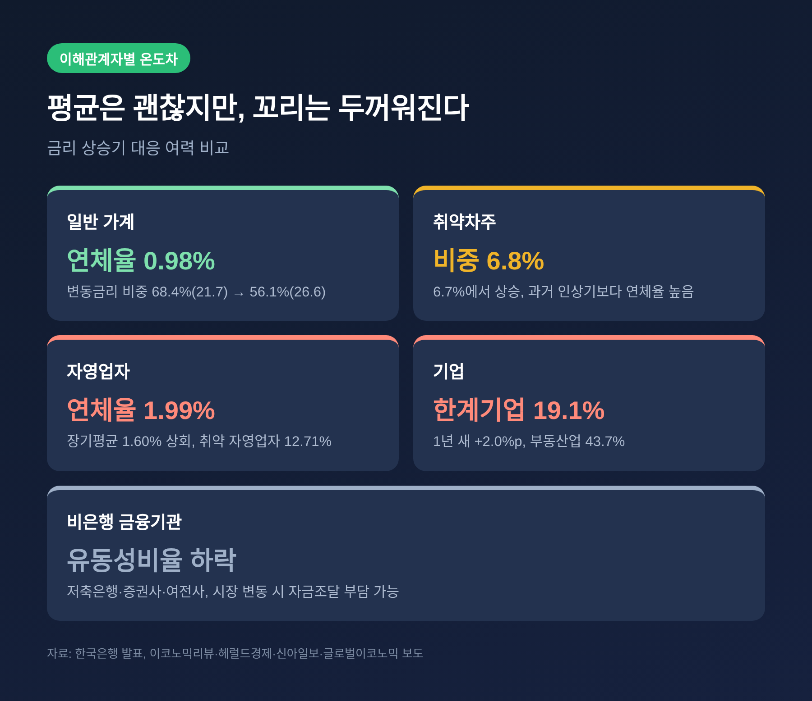

한국은행이 9월 22일 「금융안정 상황(2026년 9월)」을 내놓았습니다. 금융시스템은 대체로 안정적이라면서도, 수도권 집값과 가계대출이 쌓아 올리는 불균형에는 분명한 경고를 붙였습니다. 이번 글에서는 보고서의 핵심 숫자와 그 숫자를 둘러싼 해석의 차이를 차례로 정리해 보겠습니다.
세 줄 요약
- 단기 금융불안지수(FSI)는 8월 19.5로 '주의 단계', 중장기 금융취약성지수(FVI)는 2분기 46.5로 9분기 연속 상승해 장기평균에 닿았습니다.
- 2분기 가계신용은 2019조8000억원으로 한 분기 새 1.3% 늘었습니다. GDP 대비 가계부채비율은 떨어지고 있지만, 한은은 이를 반도체 호황이 만든 착시에 가깝다고 봅니다.
- 한은은 통화정책과 거시건전성 정책의 조화를 주문했고, 기준금리 추가 인상의 시기와 속도를 집값·가계부채까지 함께 보며 정하겠다고 밝혔습니다.
무슨 일인가 — 금통위가 직접 점검한 금융안정 상황
한은은 금융통화위원회 정기회의 가운데 일부를 금융안정 회의로 열어 이 상황을 따로 점검합니다. 이번 회의의 주관은 장용성 금통위원이 맡았고, 설명회는 장정수 부총재보가 이끌었습니다.
평가의 첫 문장은 담담했습니다. 금융기관의 복원력과 대외지급능력이 양호해 시스템은 대체로 안정적이라는 것입니다. 은행과 비은행 모두 자본비율이 규제 수준을 크게 웃돕니다.
그러나 위험 요인으로 세 가지를 꼽았습니다.
- 수도권 집값과 가계대출 증가에 따른 금융불균형 누증
- 금리 상승 과정에서 드러날 수 있는 취약부문 부실
- 대외 변수로 인한 금융·외환시장 변동성 확대
장용성 위원은 "금융불균형 축적에 대한 경계감이 높은 상황"이라고 짧게 요약했습니다(파이낸셜뉴스·헤럴드경제 보도).
숫자로 보는 경고 — FSI는 '주의', FVI는 장기평균
두 지표를 구분해서 읽을 필요가 있습니다.
금융불안지수(FSI)는 지금 이 순간의 긴장도를 봅니다. 7월 19.3에서 8월 19.5로 조금 올랐습니다. 12 이상 24 미만이 '주의', 24 이상이 '위험'입니다. 위험 구간과는 거리가 있지만, 주의 구간 안에서 위쪽으로 움직였습니다.
금융취약성지수(FVI)는 긴 호흡의 지표입니다. 신용, 자산가격, 금융기관 복원력에 걸친 64개 지표를 묶어 계산합니다. 2분기 말 46.5로 직전 분기(45.7)보다 0.8p 올랐습니다. 2024년 1분기 약 37에서 출발해 9분기째 오르기만 한 결과입니다. 2008년 이후 장기평균(46.5)과 같은 높이입니다.
예전엔 평균 아래에 있던 지표가, 지금은 평균선에 올라섰습니다. 한은은 3분기에도 상승세가 이어진 것으로 추정했습니다.

왜 중요한가 — 가계빚 2000조, 그리고 '반도체 착시'
2분기 가계신용은 2019조8000억원입니다. 한 분기에 1.3% 늘었는데, 1분기 증가율(0.7%)의 두 배 가까운 속도입니다. 주택관련대출이 12조2000억원, 기타대출이 12조8000억원 늘었습니다. 집값과 주가가 함께 오르자 빚도 두 갈래로 불어난 셈입니다.
그런데 GDP 대비 가계부채비율은 오히려 떨어졌습니다. 지난해 말 88.1%에서 1분기 말 85.3%로 내려왔고, 2분기에는 약 81%로 추정됩니다. 장정수 부총재보는 연말에 "70%대 중후반"도 가능하다고 봤습니다. 가계부채 증가율을 연 3% 안팎으로 묶고, 명목 GDP가 두 자릿수로 성장한다는 전제입니다.
숫자만 보면 반가운 소식입니다. 소비와 성장을 누르는 임계치로 흔히 거론되는 80~85%를 밑돌 수 있기 때문입니다.
한은의 시선은 달랐습니다. 비율이 떨어진 주된 이유가 빚이 줄어서가 아니라, 분모인 GDP가 반도체 수출 덕분에 크게 불어났기 때문이라는 것입니다. AI 관련 글로벌 투자 열기가 식으면 분모는 언제든 작아질 수 있습니다. 그때는 같은 빚이 더 무겁게 느껴집니다.
그래서 한은은 비율 하락에 기대지 말고 부채 축소 노력을 이어가야 한다고 강조했습니다. 1분기 말 기준으로도 가계부채비율(85.3%)과 기업부채비율(106.5%)은 각각 장기평균(84.0%, 98.9%)을 웃돌고 있습니다.

집값은 어디서 오르고 있나
부동산 시장의 모습도 보고서에 구체적으로 담겼습니다.
- 전국 주택매매가격은 지난해 6월 이후 15개월 연속 올랐습니다. 수도권은 18개월, 비수도권은 3개월 연속입니다(헤럴드경제).
- 최근에는 고가 주택보다 중·저가 주택이 많은 지역으로 매수 수요가 몰립니다.
- 전월세 가격도 수도권을 중심으로 상승 폭이 커졌습니다. 임대차 거래 가운데 월세 비중은 67.6%입니다.
집값 상승은 곧 주택관련대출 증가로 이어졌습니다. 한은이 수도권 주택시장의 기대심리가 여전히 높고, 가계대출 증가 압력도 다시 커질 수 있다고 적은 이유입니다.
정부는 부동산 대책의 효과로 집값이 안정될 것을 기대합니다. 반면 당분간 수도권 상승세를 꺾기 어렵다는 관측도 함께 나옵니다(글로벌이코노믹). 어느 쪽이 맞을지는 아직 단정하기 어렵습니다.
쟁점 — 금리 인상, 약인가 부담인가
금통위는 7월과 8월 기준금리를 연달아 0.25%p씩 올렸습니다. 이번 보고서는 그 효과와 부작용을 나란히 적었습니다.
불균형을 누르는 쪽의 논리입니다. 금리가 오르면 자산가격 상승이 둔해지고, FVI도 대체로 내려갑니다. 신현송 총재는 8월 기자간담회에서 금리가 "특효약은 아니지만" 방향은 맞는다는 취지로 말했습니다(헤럴드경제). 장정수 부총재보도 연속 인상과 정부 대책, 주가 조정 과정의 부채 축소가 FVI 상승을 제약할 것이라고 봤습니다. 8월 가계대출 둔화가 그 신호라는 설명입니다.
부담을 걱정하는 쪽의 근거도 뚜렷합니다. 기준금리를 0.25%p 올리면 가계 약 3.3조원, 기업 약 3.7조원, 합쳐서 약 7조원의 이자가 늘어난다는 것이 한은 추정입니다. 잔액 기준 대출금리는 인상 후 약 5개월, 전체 연체율은 약 15개월 뒤에 가장 크게 반응합니다. 취약가계와 중소기업은 약 9개월 전후로 더 빨리 흔들립니다.
단기 FSI가 오르는 현상도 이 맥락에서 읽힙니다. 장 부총재보는 금리 인상기에 FSI가 먼저 오르고, 시차를 두고 FVI가 내려가는 것이 "통상적 전달경로"라고 설명했습니다. 지금의 주의 단계를 과열의 신호로 볼지, 긴축이 제대로 작동하는 과정으로 볼지는 해석이 갈리는 지점입니다.

이해관계자별로 보면 — 누가 가장 먼저 흔들리나
같은 금리 인상도 누구에게는 가볍고, 누구에게는 무겁습니다.
- 일반 가계: 변동금리대출 비중이 2021년 7월 68.4%에서 올해 6월 56.1%로 낮아졌습니다. 가계대출 연체율도 0.98%로 소폭 내렸습니다. 평균적인 대응 여력은 과거 인상기보다 낫습니다.
- 취약차주: 다중채무자이면서 저소득 또는 저신용인 차주 비중은 6.7%에서 6.8%로 올랐습니다. 이들의 연체율은 과거 인상기보다 높습니다.
- 자영업자: 대출 잔액은 1098조5000억원, 연체율은 1.99%로 장기평균(1.60%)을 넘었습니다. 취약 자영업자 연체율은 12.71%에 이릅니다.
- 기업: 한계기업 비중은 지난해 말 19.1%로 1년 새 2.0%p 올랐습니다. 부동산업(43.7%)과 숙박·음식업(28.4%)이 특히 높습니다. 장 부총재보는 금리 부담이 가계보다 기업에 훨씬 크다고 짚었습니다. 다만 올해는 수익성 개선으로 한계기업 비중이 낮아질 것으로 한은은 예상합니다.
- 금융기관: 자본비율은 넉넉합니다. 다만 저축은행·증권사·여신전문금융회사의 유동성비율이 낮아져, 시장이 출렁이면 자금조달 부담이 커질 수 있습니다.
평균은 괜찮지만 꼬리는 두꺼워지고 있습니다. 이번 보고서가 전하는 가장 현실적인 메시지일 것입니다.

앞으로의 전망 — 정책 조합과 남은 변수
한은이 내놓은 처방은 크게 세 갈래입니다.
첫째, 통화정책과 거시건전성 정책을 서로 보완하도록 운용합니다. 금리만으로 집값을 잡기 어렵고, 대출 규제만으로 기대심리를 꺾기도 어렵기 때문입니다. 금융당국의 가계부채 관리 기조는 흔들림 없이 유지돼야 한다는 것이 한은 입장입니다.
둘째, 상환능력이 떨어지는 취약차주에는 선별적 지원을 병행합니다. 재정과 금융 정책의 협력도 함께 언급됐습니다.
셋째, 기준금리의 추가 인상 시기와 속도는 물가·성장뿐 아니라 수도권 주택가격과 가계부채를 함께 보며 정합니다. 시장 불안이 생기면 정부와 협력해 적기에 안정 조치를 하겠다고 밝혔습니다.
바깥 변수도 만만치 않습니다. 미국의 긴축 기조 장기화, 주요국 장기 국채금리 상승, 중동 지정학 리스크, 글로벌 AI 투자 둔화 가능성이 모두 거론됐습니다. 특히 AI 투자 둔화는 반도체 수출을 거쳐 가계부채비율의 분모까지 흔들 수 있는 변수입니다.
한계도 분명히 적어 둡니다. 2분기 가계부채비율 약 81%와 연말 70%대 중후반은 모두 추정치입니다. 10월 초 자금순환 통계가 나와야 첫 확인이 가능합니다.
마지막으로 한 가지만 덧붙이겠습니다.
이번 보고서는 위기를 선언한 문서가 아닙니다. 시스템은 버티고 있고, 비율은 내려가고 있습니다. 다만 그 개선의 상당 부분이 반도체라는 한 줄기 성장에 기대고 있다는 점을 한은 스스로 짚었습니다.
"비율이 낮아졌다고 빚이 가벼워진 것은 아닙니다."
지금 대출을 늘릴지 줄일지 물으신다면, 금리가 아니라 내 소득이 얼마나 오래 버틸 수 있는지부터 따져 보시길 권합니다.
이 글은 한국은행 발표와 언론 보도를 바탕으로 경제 흐름을 해설한 정보 제공 목적의 글이며, 투자 권유가 아닙니다. 특정 자산의 매매나 대출 결정의 판단과 책임은 본인에게 있습니다.
참고 자료: 한국은행 「금융안정 상황(2026년 9월)」 관련 보도 — 파이낸셜뉴스(9.22), 글로벌이코노믹(9.22), 신아일보(9.22), 이코노믹리뷰(9.22), 이투데이(9.22), 헤럴드경제(9.22), SBS Biz(9.22)